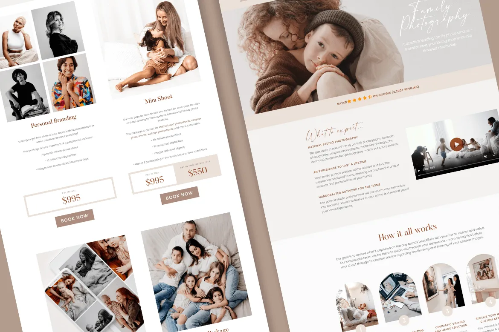
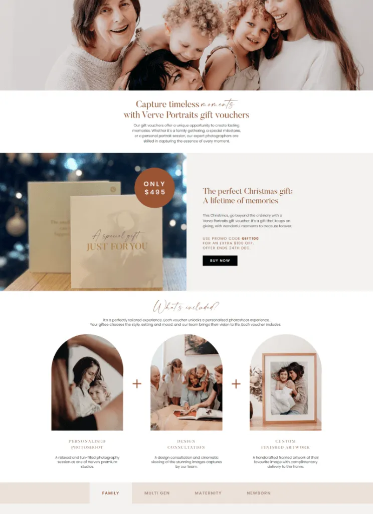
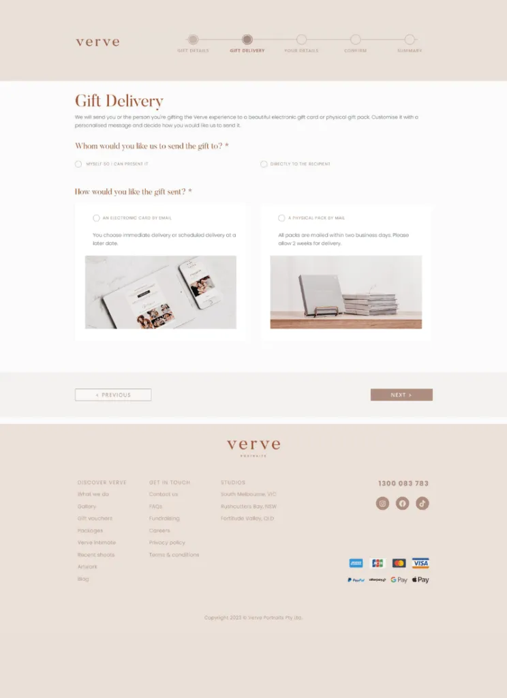

Family Photography Platform - Verve Portrait
The client wanted to create a simple online integration platform for Verve Portraits, a company that offers photo sessions for families, couples, and newborns. The platform helps clients find and book the right photoshoot session through a website accessible on iPhones and Android devices. Verve Portraits, focused on being a leading photo session company in Australia, are passionate storytellers and love to document families and all the special milestones throughout their lives.
At Cloud Converge, we transitioned Verve Portraits’ web presence to an enhanced site within WooCommerce and collaborated with Fulfillment to improve the e-commerce store. We provided a contemporary site that improved the Verve Portraits’ site functionality while providing the ability for Verve Portraits to efficiently manage partners to fulfill orders.
We also integrated Verve Portraits’ website with Mystratus, and integrated Salesforce Accounting to be enable syncing of data including inventory, orders, cancellations, and returns. Our workload with partners meant Verve Portraits orders could be delivered faster and in a more efficient manner. Additionally, Cloud Converge was retained to provide continuous support with website updates, managing available booking session dates and times, and connecting with other systems in the online marketing space.
To build upon the platform, we also incorporated AWS S3 to keep photos secure and save up space. With AWS S3 managing image storage, the platform is able to read high-resolution photos with optimal speed, freeing the server of any computing capacity or memory restrictions. We incorporated AWS Lambda to automate backend tasks including image optimization, image file transfers, scheduled data syncing, etc. This will improve the performance of the platform and reduce the amount of operational input needed to accomplish these tasks regularly. We integrated Salesforce CRM into the platform to allow all client-matter, lead registration, opportunity tracking, and booking to be done using Salesforce. This allows users to have one visual representation of their interactions with customers. We incorporated myStratus which is a scheduling and studio management software by StudioPlus Software. This allows Verve Portraits’ clients to see real-time scheduling availability and book sessions based on available time directly from the website. Lastly, we incorporated Klaviyo for email marketing to allow Verve Portraits to schedule booking confirmations, reminders, follow-up emails, and marketing campaigns with precision and automation.

User Experience Design & Backend Integration
The design of the site enables an efficient experience, with a clean and straightforward design for ease of navigation by users seeking photo sessions. We selected the color palette for the site to create an Airy, Modern, and welcoming feel. Our solution efficiently integrates with the client’s POS system, as well as connecting to multiple Payment Gateways, and an SMS provider in Australia. To provide a consistent user experience, the website for Verve Portraits was developed on the Elementor platform for a unified and user-friendly web user experience.

